PHI OS · W11R6 针对性修复审核
CASE-09 历史来源记录一致性与 provenance 核验
已记录人工决定：STRUCTURAL REPAIR — PARTIAL HUMAN ACCEPT。
WHOLE REPORT — REJECT PENDING TARGETED REPAIR。
PRD-W12 — BLOCKED。
本轮机器检查通过不改变人工决定。PFIG-005、006、009 仍为 CONDITIONAL；等待下一次明确 ACCEPT / REJECT。没有执行冻结、提交、推送或部署。
| 图 | 明确人工决定 | 状态解释 |
|---|---|---|
| PFIG-001 | ACCEPT | 保留已批准结构 |
| PFIG-002 | ACCEPT | 保留已批准结构 |
| PFIG-003 | ACCEPT | 保留已批准结构 |
| PFIG-004 | ACCEPT | 保留已批准结构 |
| PFIG-005 | CONDITIONAL | 等待本轮明确 ACCEPT / REJECT；不等于 ACCEPT |
| PFIG-006 | CONDITIONAL | 等待本轮明确 ACCEPT / REJECT；不等于 ACCEPT |
| PFIG-007 | ACCEPT | 保留已批准结构 |
| PFIG-008 | ACCEPT | 保留已批准结构 |
| PFIG-009 | CONDITIONAL | 等待本轮明确 ACCEPT / REJECT；不等于 ACCEPT |
三份完整双语 PDF
- CASE-01 · 49 页 · A4 / 一案一份双语报告
- CASE-08 · 53 页 · A4 / 一案一份双语报告
- CASE-09 · 45 页 · A4 / 一案一份双语报告
十一例 A4 与 390px 均通过；每图一次；P01–P05 与 SEC01–SEC10 Masters 保持原样。原生量尺独立；UNKNOWN / EMPTY 保持可见。原40页历史PDF不可用，不主张与其像素等价。
R1 · CASE-08 五项推理任务样本
Before: 任务结果Task outcomes本图未提供任务结果；不据兴趣推断能力No task outcomes supplied in this figure; interest does not infer ability未记录 / Not recorded
After: 已记录任务样本Recorded task samples已记录 5 项任务样本；不等于职业适配Recorded task samples: 5; not occupational suitability有记录 / Recorded
五项任务有记录；职业兴趣测评缺失；实际工作场所观察缺失；持续职业适配 UNKNOWN。任务样本不成为职业适配结论。

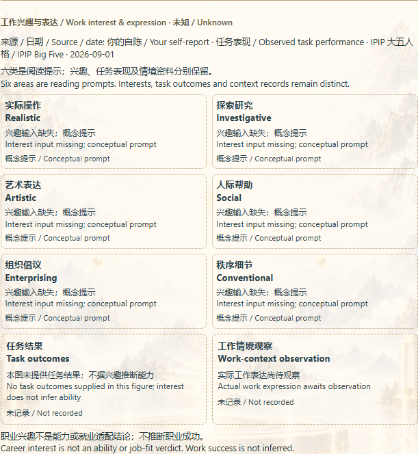

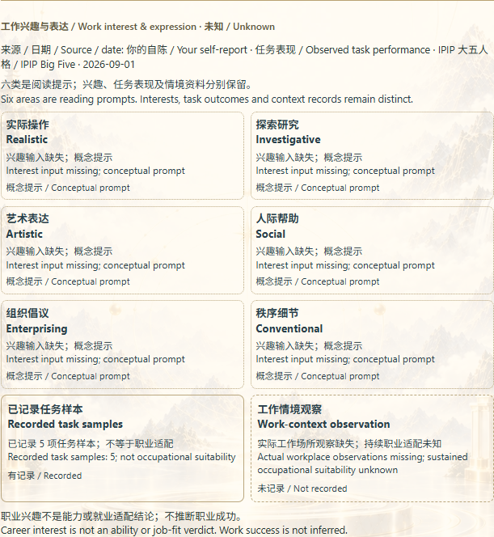


| 任务 | 原始值 | 日期 / 来源 |
|---|---|---|
ABSTRACT_RELATIONPRF-SIG-27C78CA72679A251E9B3CA4D | {"rawCorrect":0,"rawAttempted":1,"rawAccuracy":0} | 2026-09-01 [{"source":"content/profile/academic/reasoning/original-reasoning-task-bank-v1.json","taskBankVersion":"1.0.0","performanceId":"PRF-REASON-PERSON-A"}] |
PATTERN_COMPLETIONPRF-SIG-15FA1621E30EC7EC6099845A | {"rawCorrect":1,"rawAttempted":1,"rawAccuracy":1} | 2026-09-01 [{"source":"content/profile/academic/reasoning/original-reasoning-task-bank-v1.json","taskBankVersion":"1.0.0","performanceId":"PRF-REASON-PERSON-A"}] |
RELATIONAL_MATRIXPRF-SIG-6C9F665773CCDFB79BE5E968 | {"rawCorrect":1,"rawAttempted":1,"rawAccuracy":1} | 2026-09-01 [{"source":"content/profile/academic/reasoning/original-reasoning-task-bank-v1.json","taskBankVersion":"1.0.0","performanceId":"PRF-REASON-PERSON-A"}] |
SEQUENCE_REASONINGPRF-SIG-E1E26E211A0C6536CE2ECA4F | {"rawCorrect":1,"rawAttempted":1,"rawAccuracy":1} | 2026-09-01 [{"source":"content/profile/academic/reasoning/original-reasoning-task-bank-v1.json","taskBankVersion":"1.0.0","performanceId":"PRF-REASON-PERSON-A"}] |
SPATIAL_TRANSFORMATIONPRF-SIG-8BC9F934E00FD24DA9E0E08E | {"rawCorrect":0,"rawAttempted":1,"rawAccuracy":0} | 2026-09-01 [{"source":"content/profile/academic/reasoning/original-reasoning-task-bank-v1.json","taskBankVersion":"1.0.0","performanceId":"PRF-REASON-PERSON-A"}] |
R2 · CASE-09 逐行对账
两条对照；分类计数 CONVERGES 0 / CONTEXT_DEPENDENT 2 / DIVERGES 0 / UNKNOWN 0；一个已准入现实关联。原始 SOURCE_TENSION 与 CURRENTLY_CONTRADICTED 不改写。认知导航仍为当前不一致；PFIG-004 仍为 UNKNOWN。PFIG-005/009 的 READY 仅表示已有有边界的对照资料。
已准入关联来自原始不透明 correlation reference；本 source view 没有其完整情境观察正文。因此不宣称重复情境观察，不新增来源或证据。
| 对照 / 主题 | 来源信号 / 原值 / provenance | 原始状态 / statement | 投影分类 | 已准入现实关联 | 未观察部分 |
|---|---|---|---|---|---|
PRF-XSP-FCFBCB4DF37AD635E08AB99BCOGNITIVE_NAVIGATION | PRF-SIG-599D217B3257200F8AFDB8F2CUSTOMER_SELF_REPORT · 原值 100 2026-09-01 [{"source":"PHI-SA2-RESULT-PERSON-A","instrumentCode":"PHI-OS-SELF-ASSESSMENT-INSTRUMENT-v2","instrumentVersion":"2.0.0"}] PRF-SIG-4A10B56AAC7901080B8F62A1SYMBOLIC_INTERPRETATION · 原值 "Symbolic lens emphasizes a different operating pattern" 2026-09-01 [{"source":"PRF-W12-SYMBOLIC-FIXTURE"}] | SOURCE_TENSION The two source classes remain in tension. | CONTEXT_DEPENDENT | 0 无关联 / None | 重复情境观察未确立；缺少明确的实际情境观察记录。 |
PRF-XSP-560B3F638C5D904403EEC600COGNITIVE_NAVIGATION | PRF-SIG-599D217B3257200F8AFDB8F2CUSTOMER_SELF_REPORT · 原值 100 2026-09-01 [{"source":"PHI-SA2-RESULT-PERSON-A","instrumentCode":"PHI-OS-SELF-ASSESSMENT-INSTRUMENT-v2","instrumentVersion":"2.0.0"}] | CURRENTLY_CONTRADICTED Current Reality currently contradicts this self-reported signal. | CONTEXT_DEPENDENT | 1PRF-RC-ABF0C92A9C2B39C9D7AD3EBA | 重复情境观察未确立；缺少明确的实际情境观察记录。 |

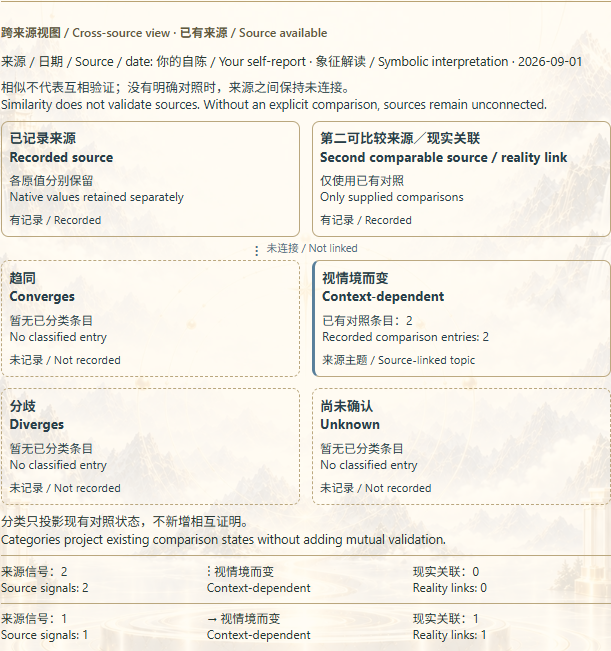

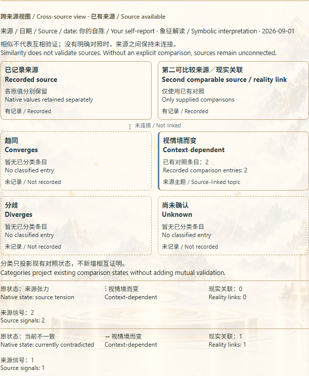


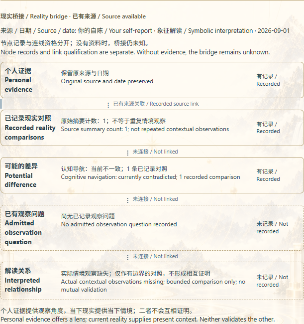


R3 · 十一例双语语法审计
| Case | 结果 | 修正段落数 | 表格 | 保存项 |
|---|---|---|---|---|
| CASE-01 | PASS | 0 | 未改 | 中文、来源身份与权威字段保持原样 |
| CASE-02 | PASS | 0 | 未改 | 中文、来源身份与权威字段保持原样 |
| CASE-03 | PASS | 0 | 未改 | 中文、来源身份与权威字段保持原样 |
| CASE-04 | PASS | 0 | 未改 | 中文、来源身份与权威字段保持原样 |
| CASE-05 | PASS | 2 | 语法修复 | 中文、来源身份与权威字段保持原样 |
| CASE-06 | PASS | 1 | 未改 | 中文、来源身份与权威字段保持原样 |
| CASE-07 | PASS | 2 | 语法修复 | 中文、来源身份与权威字段保持原样 |
| CASE-08 | PASS | 0 | 未改 | 中文、来源身份与权威字段保持原样 |
| CASE-09 | PASS | 2 | 语法修复 | 中文、来源身份与权威字段保持原样 |
| CASE-10 | PASS | 2 | 语法修复 | 中文、来源身份与权威字段保持原样 |
| CASE-11 | PASS | 0 | 未改 | 中文、来源身份与权威字段保持原样 |
CASE-05 · SEC-01-PAIR-01
Before: Today's profile contains 5 evidence records from 1 source class, covering 1 recorded domains. This is a personal map of the material available: The available sources contribute results within their own scope, giving the corresponding questions a concrete basis.
After: Today's profile contains 5 evidence records from 1 source class, covering 1 recorded domain. This is a personal map of the material available: The available sources contribute results within their own scope, giving the corresponding questions a concrete basis.
CASE-05 · SEC-02-PAIR-01
Before: All 1 domains here come from the evidence records: Reasoning task performance. They are entry points into the material, rather than interchangeable ability scores. Domains outside this material are not filled with personal conclusions.
After: The 1 recorded domain here comes from the evidence records: Reasoning task performance. It is an entry point into the material, rather than an interchangeable ability score. Domains outside this material are not filled with personal conclusions.
CASE-06 · SEC-06-PAIR-01
Before: 1 task records provide samples of addressing specific problems for the work reading. Their value is to move discussion from broad labels to actual attempts: what was done in response to a demand, what resulted and which conditions merit further comparison.
After: 1 task record provides samples of addressing specific problems for the work reading. Their value is to move discussion from broad labels to actual attempts: what was done in response to a demand, what resulted and which conditions merit further comparison.
CASE-07 · SEC-01-PAIR-01
Before: Today's profile contains 1 evidence records from 1 source class, covering 1 recorded domains. This is a personal map of the material available: The available sources contribute results within their own scope, giving the corresponding questions a concrete basis.
After: Today's profile contains 1 evidence record from 1 source class, covering 1 recorded domain. This is a personal map of the material available: The available sources contribute results within their own scope, giving the corresponding questions a concrete basis.
CASE-07 · SEC-02-PAIR-01
Before: All 1 domains here come from the evidence records: Official MBTI result. They are entry points into the material, rather than interchangeable ability scores. Domains outside this material are not filled with personal conclusions.
After: The 1 recorded domain here comes from the evidence records: Official MBTI result. It is an entry point into the material, rather than an interchangeable ability score. Domains outside this material are not filled with personal conclusions.
CASE-09 · SEC-01-PAIR-01
Before: Today's profile contains 2 evidence records from 2 source classes, covering 1 recorded domains. This is a personal map of the material available: 1 records come from your own responses, showing how you understand several aspects of your functioning.
After: Today's profile contains 2 evidence records from 2 source classes, covering 1 recorded domain. This is a personal map of the material available: 1 record comes from your own responses, showing how you understand several aspects of your functioning.
CASE-09 · SEC-02-PAIR-01
Before: All 1 domains here come from the evidence records: Cognitive navigation. They are entry points into the material, rather than interchangeable ability scores. Domains outside this material are not filled with personal conclusions.
After: The 1 recorded domain here comes from the evidence records: Cognitive navigation. It is an entry point into the material, rather than an interchangeable ability score. Domains outside this material are not filled with personal conclusions.
CASE-10 · SEC-01-PAIR-01
Before: Today's profile contains 1 evidence records from 1 source class, covering 1 recorded domains. This is a personal map of the material available: The available sources contribute results within their own scope, giving the corresponding questions a concrete basis.
After: Today's profile contains 1 evidence record from 1 source class, covering 1 recorded domain. This is a personal map of the material available: The available sources contribute results within their own scope, giving the corresponding questions a concrete basis.
CASE-10 · SEC-02-PAIR-01
Before: All 1 domains here come from the evidence records: Other external assessment. They are entry points into the material, rather than interchangeable ability scores. Domains outside this material are not filled with personal conclusions.
After: The 1 recorded domain here comes from the evidence records: Other external assessment. It is an entry point into the material, rather than an interchangeable ability score. Domains outside this material are not filled with personal conclusions.
完整语法审计 · 只作确定性的英文单复数与谓语一致修复。
九图结构保留对比 · CASE-01
PFIG-001 · ACCEPT
前图为上轮已审核 W11R6 图；后图为本轮修复稿。图表数据、章节绑定与状态没有改写。

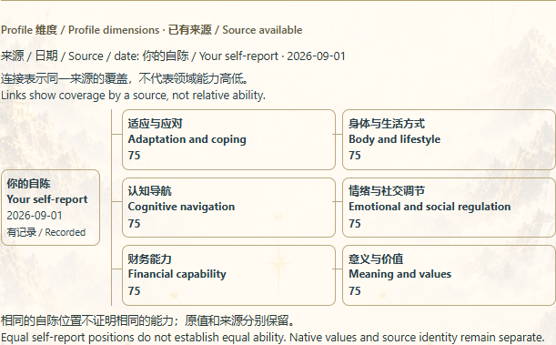


PFIG-002 · ACCEPT
前图为上轮已审核 W11R6 图；后图为本轮修复稿。图表数据、章节绑定与状态没有改写。


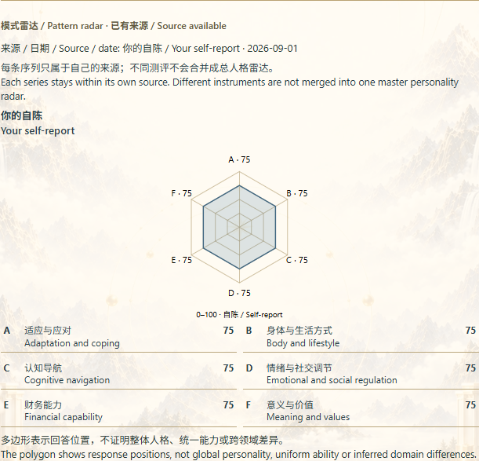


PFIG-003 · ACCEPT
前图为上轮已审核 W11R6 图；后图为本轮修复稿。图表数据、章节绑定与状态没有改写。

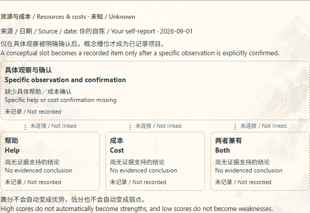


PFIG-004 · ACCEPT
前图为上轮已审核 W11R6 图；后图为本轮修复稿。图表数据、章节绑定与状态没有改写。

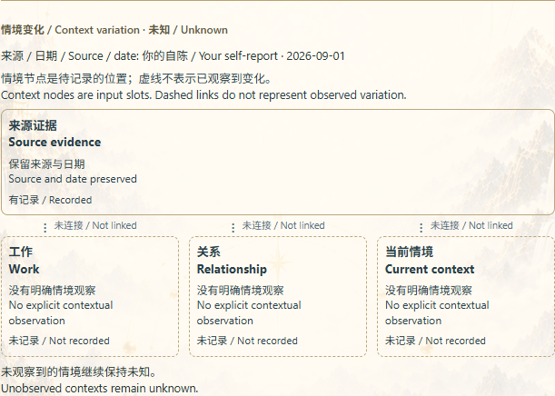


PFIG-005 · CONDITIONAL
前图为上轮已审核 W11R6 图；后图为本轮修复稿。图表数据、章节绑定与状态没有改写。


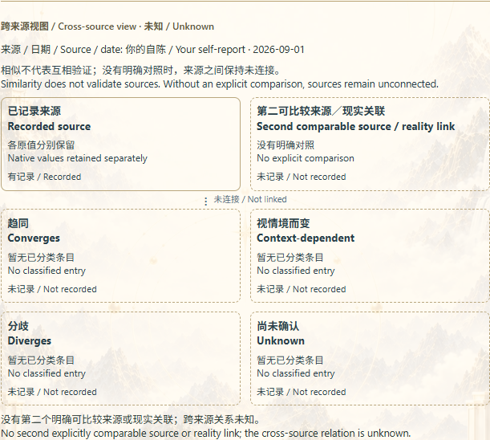


PFIG-006 · CONDITIONAL
前图为上轮已审核 W11R6 图；后图为本轮修复稿。图表数据、章节绑定与状态没有改写。


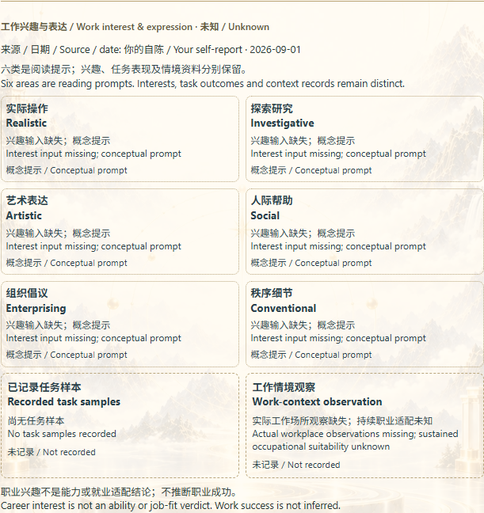


PFIG-007 · ACCEPT
前图为上轮已审核 W11R6 图；后图为本轮修复稿。图表数据、章节绑定与状态没有改写。


PFIG-008 · ACCEPT
前图为上轮已审核 W11R6 图；后图为本轮修复稿。图表数据、章节绑定与状态没有改写。

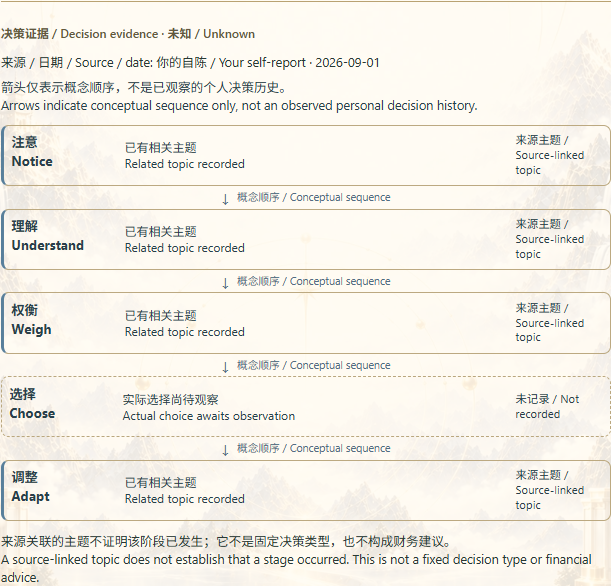


PFIG-009 · CONDITIONAL
前图为上轮已审核 W11R6 图；后图为本轮修复稿。图表数据、章节绑定与状态没有改写。

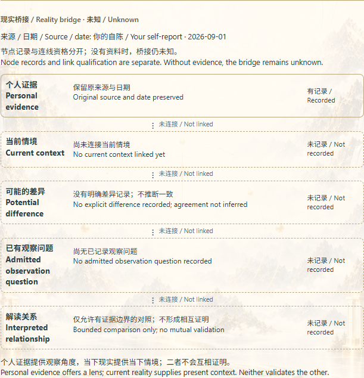

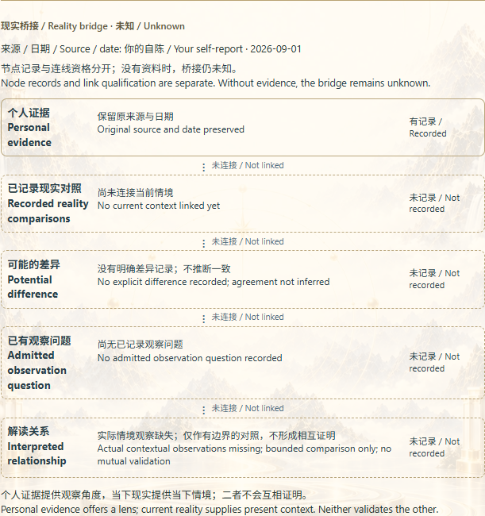


真实检查与零费用证据
十一例 / 九图各一次 / 三份 PDF。远程资源请求为 0，provider 与 OpenAI API 调用为 0。
- check:cpr:prd-w0-w6: INVOCATION_ERROR — 已用正确别名重跑 · 实际输出
- check:profile:pfig-authority: PASS · 实际输出
- check:profile:personal-evidence-prd-w3-w5: PASS · 实际输出
- check:profile:personal-evidence-prd-w6: PASS · 实际输出
- check:profile:personal-evidence-prd-w7: PASS · 实际输出
- check:profile:personal-evidence-prd-w8: PASS · 实际输出
- check:rr-v2: PASS · 实际输出
- check:rmo: PASS · 实际输出
- check:profile: PASS · 实际输出
- check:ppr-current-shared-owner: PASS · 实际输出
- check:relationship:w0-w8: PASS · 实际输出
- check:runtime-position-48: PASS · 实际输出
- check:cloudflare-function-import-compat: PASS · 实际输出
- check:profile:pfig-provenance-preservation: PASS · 实际输出
- check:profile:prd-w11r5: PASS · 实际输出
- check:profile:pfig-publication-legibility: PASS · 实际输出
- check:pages-build: PASS · 实际输出
- check:cpr-w0-w6: BASELINE_EXTERNAL · 实际输出
- check:profile:pfig-semantic-grammar: PASS · 实际输出
- check:profile:prd-w11r5:pfig-publication: PASS · 实际输出
- check:profile:prd-w11r6: PASS · 实际输出
- check:profile:pfig-review-browser: PASS · 实际输出
- R1/R2/R3 针对性检查
- 十一例真实 A4 / 390px 测量
- 三份 PDF 实际校验与 SHA256
- 网络防护进程计数
- 完整文件变更清单
- 完整执行结果
{
"status": "READY_FOR_HUMAN_REVIEW",
"wholeReport": "REJECT_PENDING_TARGETED_REPAIR",
"conditionalIsAccept": false,
"w12": "BLOCKED",
"providerCalls": 0,
"openAiCalls": 0,
"remoteRequestsBlocked": 0
}保留 CPR public-assets 历史摘要失败，未修改冻结 digest；原始 W11R5/W11R6 审核记录保留。本轮不运行无关 Book 修复。